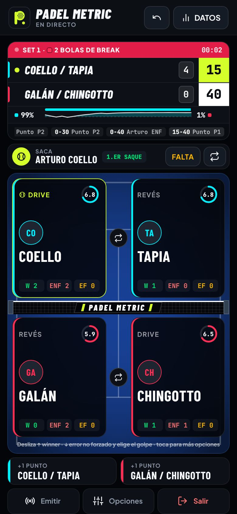
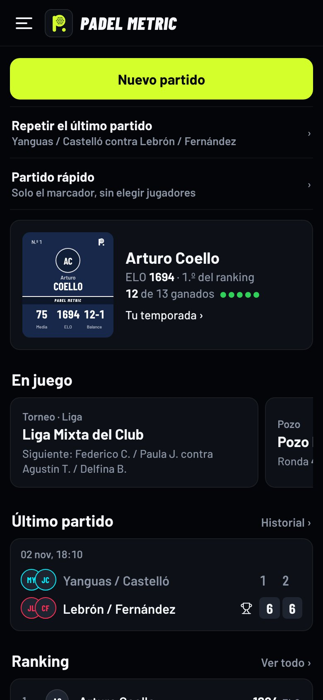
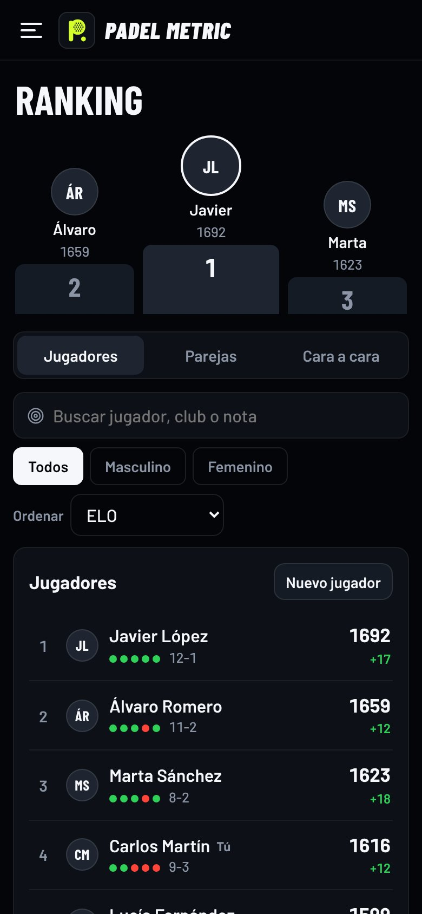

Tu pádel, punto a punto
Lleva el marcador desde el móvil y descubre dónde ganas y dónde pierdes los puntos: golpes, zonas de la pista, puntos clave y probabilidad de victoria en cada momento.
Gratis, sin anuncios y sin crear cuenta. Tus datos se quedan en tu móvil.


Qué puedes hacer
Marcador completo
Ventaja, star point o punto de oro, tie-break y súper tie-break. El saque rota solo y se deshace cualquier punto.
Estadísticas de verdad
Golpes ganadores y errores de cada jugador, mapa de calor por zonas, puntos clave y la curva de probabilidad de victoria.
Ranking ELO
De jugadores y de parejas, con el cara a cara y la carta de cada jugador con sus atributos.
Americanos y torneos
Americano, mexicano, pozo, eliminatorias, ligas y grupos. Cruces y clasificación automáticos, e inscripción con un QR.
En directo
Un enlace o un QR para que cualquiera siga el marcador o la clasificación desde su móvil o en una tele.
Anota sin tocar el móvil
Con un mando Bluetooth de los de hacer fotos o, en Android, con los botones de volumen.
Así se ve

Instalarla
Android
- Abre la app en Chrome.
- Pulsa "Instalar" en el aviso o en el menú ⋮.
- Aparecerá en tu pantalla de inicio.
iPhone
- Abre la app en Safari.
- Pulsa el botón de compartir.
- Elige "Añadir a pantalla de inicio".
Ordenador o tablet
- Abre la app en Chrome o Edge.
- Pulsa el icono de instalar de la barra de direcciones.
- Funciona también sin conexión.